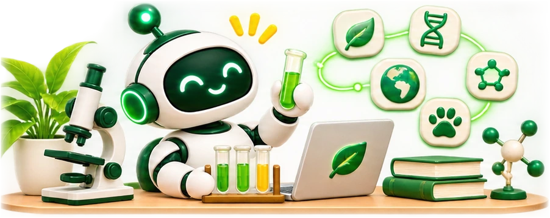

Biologie, chemie a fyzika s AI: simulujte experimenty, vysvětlujte přírodní jevy a připravujte aktivity pro různé ročníky.
🎯6 aktivit
✨4 promptů
⚗️Bio · Che · Fyz
🏫ZŠ · SŠ

Ročník:
Obor:
Zobrazeno 6 z 6 aktivit
GeminiBiologie
🧬
Biologická simulace: hypotéza a meze modelu
Učitel vede zkoumání biologického procesu. Žáci předem formulují hypotézu, porovnají ji s jasně označeným modelovaným scénářem a popíší předpoklady i omezení modelu. Původních 20 min je orientační čas aktivity; přesný rozpis nebyl doložen.
⏱ 20 min👥 Skupiny
ChatGPTChemie
⚗️
Průvodce chemickými rovnicemi
AI krok za krokem vysvětlí postup vyčíslování chemických rovnic, jejich typy a aplikace v reálném světě.
⏱ 10 min👤 Individuální
ChatGPTFyzika
⚡
Vysvětlení fyzikálních jevů analogiemi
AI vysvětlí složité fyzikální pojmy pomocí analogií ze každodenního života, které žáci ihned pochopí a zapamatují si.
⏱ 5 min🏫 Třída
GeminiBiologie
🐾
Badatelský profil živočicha
Krátký režim (původních 8 min): učitel dodá dva ověřené krátké podklady, žáci porovnají tvrzení a vytvoří stručný profil. Rozšířený režim (orientačně 20–30 min): žáci ověřují informace ve více zdrojích. AI nesmí vymýšlet zdroje ani aktuální údaje o ohrožení.
⏱ 8 min👤 Individuální
ClaudeFyzika
🔭
Fyzikální tutor s nápovědou po vlastním pokusu.
Žák nejprve sepíše známé veličiny a vlastní plán. AI potom po krocích nabízí nápovědu a kontrolní otázky; celý vzorový postup ukáže až po žákově pokusu a ověří jej učitel.
⏱ 5 min👤 Individuální
ChatGPTChemie
🧪
Kvíz – prvky a sloučeniny
Generátor opakovacích kvízů o prvcích periodické tabulky, sloučeninách a jejich vlastnostech s automatickým klíčem.
⏱ 6 min příprava🏫 Třída
Simulace laboratorního experimentu
GeminiZŠ/SŠ
Simuluj laboratorní experiment „[NÁZEV]" pro žáky [ROČNÍK]. Zahrň: potřebné pomůcky, bezpečnostní pravidla, postup krok za krokem, popis průběhu reakce / jevu, vědecké vysvětlení, závěrečné otázky pro žáky a návrh protokolu, který si žáci mohou vyplnit.
Vysvětlení jevu analogiemi z praxe
ChatGPTZŠ
Vysvětli přírodovědný/fyzikální/chemický jev „[JEV]" žákům [ROČNÍK] pomocí 3 různých analogií z každodenního života. Pak uveď reálné příklady tohoto jevu v praxi. Zakončit 3 otázkami, které ověří porozumění. Vyvaruj se odborného žargonu bez vysvětlení.
Opakovací kvíz z přírodovědného tema
ChatGPTZŠ/SŠ
Vytvoř opakovací kvíz z [PŘEDMĚT: biologie/chemie/fyzika] na téma [TÉMA] pro žáky [ROČNÍK]. Formát: 5 testových otázek (ABCD), 3 otevřené otázky, 2 úlohy na přiřazení. Přidej správné odpovědi a stručné vysvětlení každé odpovědi.
Průvodce výzkumným projektem
ClaudeSŠ
Pomoz mi navrhnout výzkumný projekt na téma [TÉMA] pro žáky [ROČNÍK] SŠ. Struktura: výzkumná otázka, hypotéza, metodologie (jak sbírat data), potřebné materiály, jak analyzovat výsledky, jak prezentovat závěry. Přizpůsob délce [POČET] týdnů výuky.
🔵
Gemini
Google · Gemini 2.0
Nejlepší volba pro přírodní vědy – propojuje vědecké informace s
aktuálními daty z Google, zvládá analýzu grafů a experimentálních schémat.
ExperimentyReálná data
🟤
Perplexity AI
Perplexity
Výzkumný asistent s citacemi – ideální pro vědecká témata. Odpověď
vždy obsahuje zdroje, takže učitelé mohou ověřit fakta.
Vědecké zdrojeCitace
🟢
ChatGPT
OpenAI
Skvělý pro tvorbu kvízů, vysvětlení analogiemi a tvorbu úloh z
fyziky a chemie. Zvládá i analýzu obrázků (fotografie z tabule).
KvízyFyzika
🔬
Tip: Perplexity pro fakta s citacemiPro vědecká
fakta používejte Perplexity AI – každá odpověď obsahuje zdroje, které si žáci i vy můžete
ověřit. Vynikající pro projekt-based learning.
💡
Tip: Fotografie z mikroskopu nebo tabuleChatGPT a
Gemini dokáží analyzovat fotografie – vyfotografujte schéma buňky, graf nebo pokus z tabule
a nechte AI vysvětlit, co vidí.
⚠️
Upozornění: Vždy ověřujte vědecká faktaAI může
generovat nepřesné nebo zastaralé vědecké informace. Pro chemické reakce a biologické
klasifikace vždy ověřte u odborného zdroje.